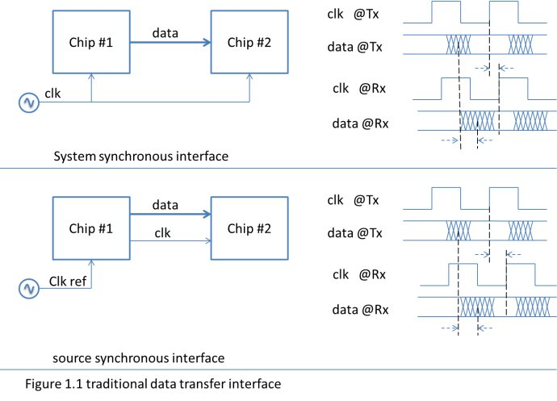
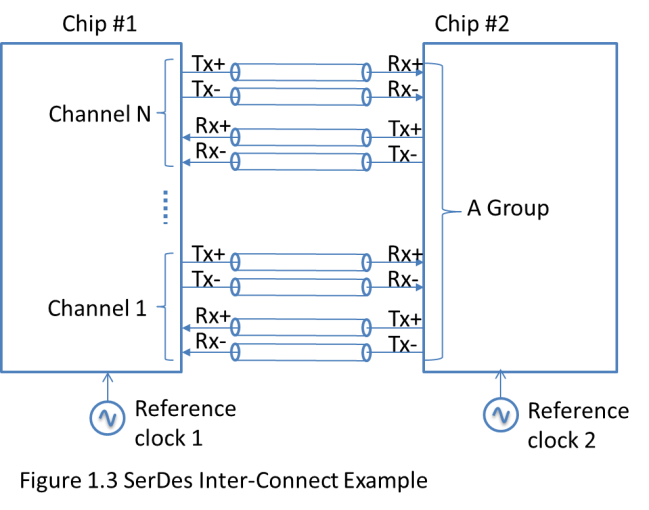

SerDes_简介
本文最后更新于：2024年4月2日 上午
- 参考
1. SerDes 简介
SerDes 是 Serializer/Deserializer 的缩写，主要完成以下两部分任务：
- 在发送端，将多路低速并行的信号转换为高速串行的信号。
- 经过传输媒体（光缆或者铜线等），最后在接收端，将高速串行信号转换为低速并行信号。
为什么需要 Serdes

系统同步接口
- 对于系统同步接口，随着接口频率的不断增加，下面几个因素影响着数据传输的准确性。
- （1）时钟到达两个chip的传播延时不相等（clock skew）。
- 即使可以在
chip #2中使用PLL补偿时钟延时差，但是由于PVT变化，数据的延时和时钟的延时无法保证变化一致。
- 即使可以在
- （2）对于并行接口通信，并行数据的每个bit的传播延时不相等（data skew）。
- （3）时钟的传播延时和数据的传播延时不一致。
- （1）时钟到达两个chip的传播延时不相等（clock skew）。
- 对于系统同步接口，随着接口频率的不断增加，下面几个因素影响着数据传输的准确性。
源同步接口
对于源同步接口，其特点在于：
chip #1会将数据和时钟一起发送出去。- 需要保证在TX端两者时序是正确的，保证数据和时钟信号完全匹配，这样RX端接收到的时序也是正确的。
- 当PVT发生变化时，两者的变化趋势一致，利于同步。
以一些合理的数据做假设。
（1）TX端的数据skew：50ps
（2）PCB走线引入的skew：50ps
（3）时钟抖动 jitter：±50ps
（4）接收端触发器采样
t_c2q= 250ps可以大致估计并行接口最高时钟频率 \[ f_{max} = \frac{1}{(50+50+100+250)*10^{-12}} = 2.2GHz \]
- 对于双边采样（时钟上升&下降都采样，DDR），其最大时钟频率可到2.2GHz。
- 对于单边采样（单时钟上升沿/下降沿采样，SDR），其最大时钟频率可到1.1GHz。
根据上面的计算，源同步接口的频率一般都被限制在1GHz以下。
增加接口传输带宽，除了增加时钟频率，还可以加大数据位宽。
但是数据位宽的增加会导致同步开关噪声（SSN）的恶化。
SSN：芯片中I/O口发生大量同步的电平切换 产生的瞬态电路在电源/地产生的噪声现象，更详细的介绍可以看这篇文章。SSN产生的噪声能够降低噪声容限，导致错误的切换。
其计算公式如下。
- 其中N为同步开关的I/O数量，这里可以考虑成数据位宽。
- 其中L为电流回路等效的电感值。
di/dt代表I/O输出电流的变化速率。
\[ SSN = L*N*\frac{d_i}{d_t} \]
SerDes 接口

如上图所示，SerDes 不传输时钟信号，因为，在RX端集成了CDR（Clock Data Recovery）电路，可以利用CDR从数据的边沿信息中抽取时钟，找到最优的采样位置。
上图中，一共有N个Channel，每个Channel包含一组差分的双向的数据通路；每个通道之间的工作是相互独立的。一般会划分多个Channel为一个Group，共享PLL资源。
另外，TX和RX端使用各自的参考时钟，两个时钟之间可以有几百个ppm的频差，也可以是同频时钟，对相位差也没有要求。
- PPM 计算公式 \[ PPM = \frac{实际频率-设定频率}{设定频率} * 1000000 \]
SerDes 相较于 源同步 的主要特点
- SerDes不需要将时钟和数据一起传输，也就不需要做两者的匹配。
- SerDes可以通过预加重和均衡技术可以实现高速长距离传输。
- Serdes相较于源同步，在实现差不多速率传输的同时，使用更少的引脚。
中间类型
- 存在一些接口类型，他们既采用了串行器和解串器，也像源同步一样，在传输数据的同时还传输用于同步的时钟信号。
- 例如： 7:1 LVDS 视频接口